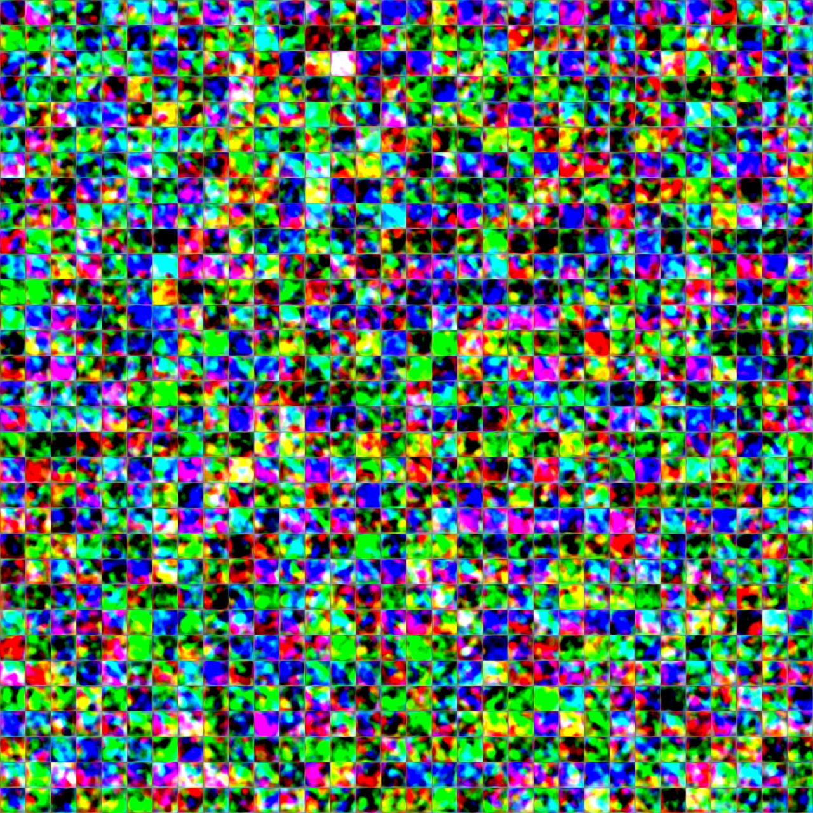
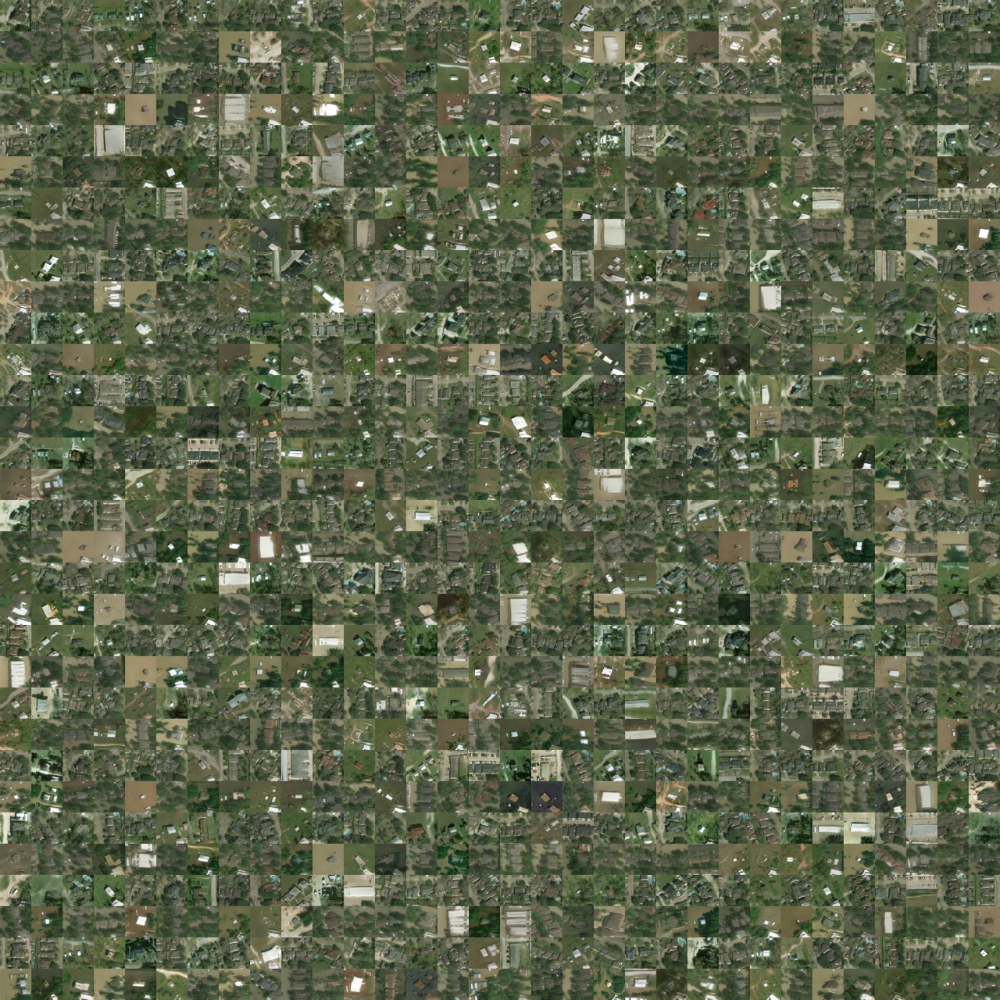
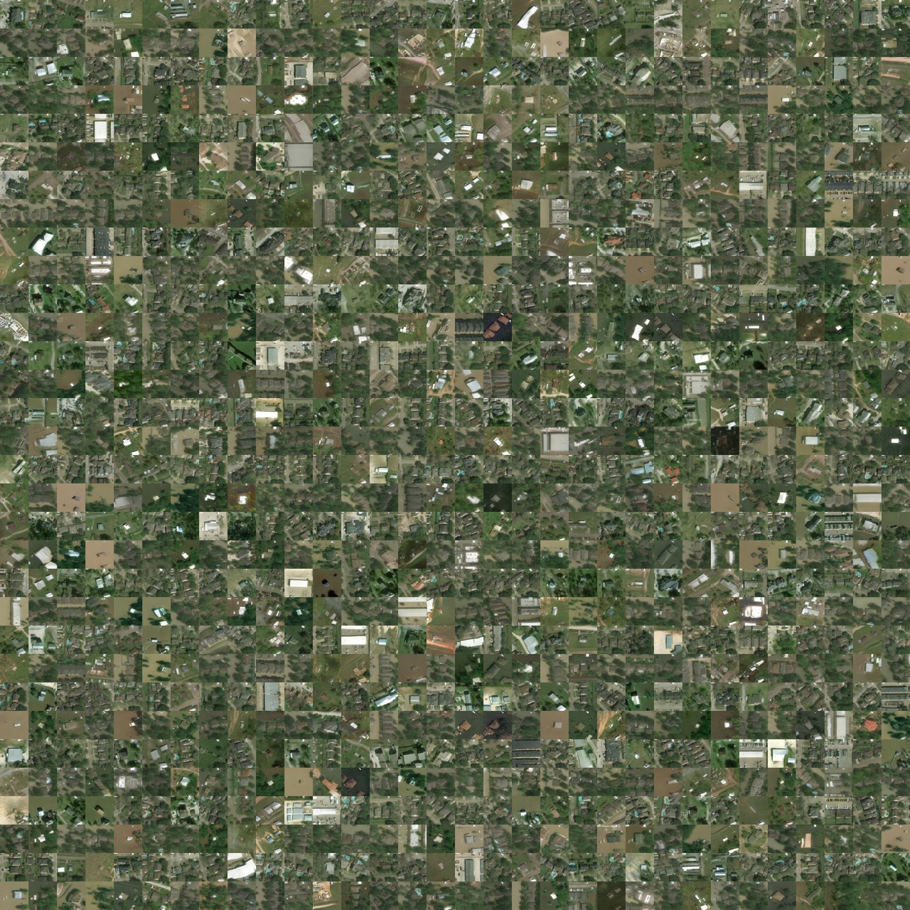
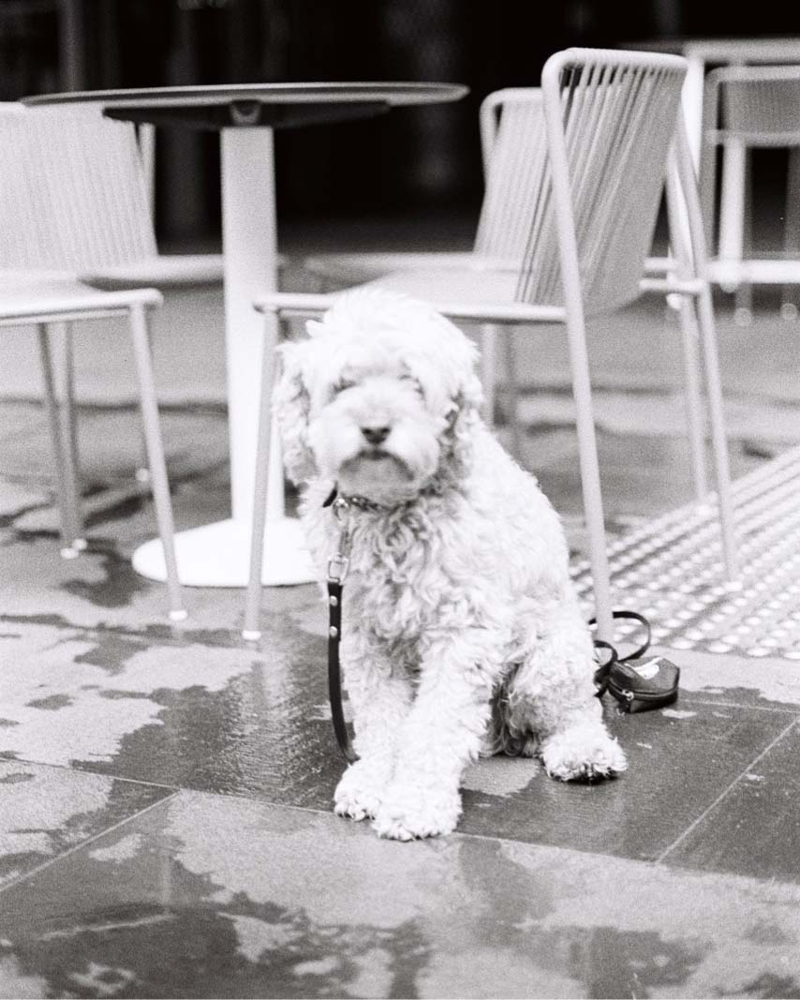

Generative Adversarial Networks
ACTL3143 & ACTL5111 Deep Learning for Actuaries
GANs consist of two neural networks, a generator, and a discriminator, and they are trained simultaneously through adversarial training. The generator takes in random noise and generates a synthetic data observation. The goal of the generator is to learn how to generate synthetic data that resembles actual data very well. The discriminator distinguishes between real and synthetic data and classifies them as ‘real’ or ‘fake’. The goal of the discriminator is to correctly identify whether the input is real or synthetic. An equilibrium is reached when the generator is able to generate data that very well resembles actual data and the discriminator is unable to distinguish them with high confidence.
Traditional GANs
Before GANs we had autoencoders
An autoencoder takes a data/image, maps it to a latent space via en encoder module, then decodes it back to an output with the same dimensions via a decoder module.

GAN faces


Try out https://www.whichfaceisreal.com.
Example StyleGAN2-ADA outputs
GAN structure

GAN intuition


Intuition about GANs
- A forger creates a fake Picasso painting to sell to an art dealer.
- The art dealer assesses the painting.
How they best each other:
- The art dealer is given both authentic paintings and fake paintings to look at. Later on, the validity his assessment is evaluated and he trains to become better at detecting fakes. Over time, he becomes increasingly expert at authenticating Picasso’s artwork.
- The forger receives an assessment from the art dealer everytime he gives him a fake. He knows he has to perfect his craft if the art dealer can detect his fake. He becomes increasingly adept at imitating Picasso’s style.
Generative adversarial networks
- A GAN is made up of two parts:
- Generator network: the forger. Takes a random point in the latent space, and decodes it into a synthetic data/image.
- Discriminator network (or adversary): the expert. Takes a data/image and decide whether it exists in the original data set (the training set) or was created by the generator network.
Discriminator
lrelu = layers.LeakyReLU(alpha=0.2)
discriminator = keras.Sequential([
keras.Input(shape=(28, 28, 1)),
layers.Conv2D(64, 3, strides=2, padding="same", activation=lrelu),
layers.Conv2D(128, 3, strides=2, padding="same", activation=lrelu),
layers.GlobalMaxPooling2D(),
layers.Dense(1)])
discriminator.summary()Generator
latent_dim = 128
generator = keras.Sequential([
layers.Dense(7 * 7 * 128, input_dim=latent_dim, activation=lrelu),
layers.Reshape((7, 7, 128)),
layers.Conv2DTranspose(128, 4, strides=2, padding="same", activation=lrelu),
layers.Conv2DTranspose(128, 4, strides=2, padding="same", activation=lrelu),
layers.Conv2D(1, 7, padding="same", activation="sigmoid")])
generator.summary()Training GANs
GAN cost functions
GAN - Schematic process
First step: Training discriminator:
- Draw random points in the latent space (random noise).
- Use generator to generate data from this random noise.
- Mix generated data with real data and input them into the discriminator. The training targets are the correct labels of real data or fake data. Use discriminator to give feedback on the mixed data whether they are real or synthetic. Train discriminator to minimize the loss function which is the difference between the discriminator’s feedback and the correct labels.
GAN - Schematic process II
Second step: Training generator:
- Draw random points in the latent space and generate data with generator.
- Use discriminator to give feedback on the generated data. What the generator tries to achieve is to fool the discriminator into thinking all generated data are real data. Train generator to minimize the loss function which is the difference between the discriminator’s feedback and the desired feedback: “All data are real data” (which is not true).
GAN - Schematic process III
- When training, the discriminator may end up dominating the generator because the loss function for training the discriminator tends to zero faster. In that case, try reducing the learning rate and increase the dropout rate of the discriminator.
- There are a few tricks for implementing GANS such as introducing stochasticity by adding random noise to the labels for the discriminator, using stride instead of pooling in the discriminator, using kernel size that is divisible by stride size, etc.
Train step
# Separate optimisers for discriminator and generator.
d_optimizer = keras.optimizers.Adam(learning_rate=0.0003)
g_optimizer = keras.optimizers.Adam(learning_rate=0.0004)
# Instantiate a loss function.
loss_fn = keras.losses.BinaryCrossentropy(from_logits=True)
@tf.function
def train_step(real_images):
# Sample random points in the latent space
random_latent_vectors = tf.random.normal(shape=(batch_size, latent_dim))
# Decode them to fake images
generated_images = generator(random_latent_vectors)
# Combine them with real images
combined_images = tf.concat([generated_images, real_images], axis=0)
# Assemble labels discriminating real from fake images
labels = tf.concat([
tf.zeros((batch_size, 1)),
tf.ones((real_images.shape[0], 1))], axis=0)
# Add random noise to the labels - important trick!
labels += 0.05 * tf.random.uniform(labels.shape)
# Train the discriminator
with tf.GradientTape() as tape:
predictions = discriminator(combined_images)
d_loss = loss_fn(labels, predictions)
grads = tape.gradient(d_loss, discriminator.trainable_weights)
d_optimizer.apply_gradients(zip(grads, discriminator.trainable_weights))
# Sample random points in the latent space
random_latent_vectors = tf.random.normal(shape=(batch_size, latent_dim))
# Assemble labels that say "all real images"
misleading_labels = tf.ones((batch_size, 1))
# Train the generator (note that we should *not* update the weights
# of the discriminator)!
with tf.GradientTape() as tape:
predictions = discriminator(generator(random_latent_vectors))
g_loss = loss_fn(misleading_labels, predictions)
grads = tape.gradient(g_loss, generator.trainable_weights)
g_optimizer.apply_gradients(zip(grads, generator.trainable_weights))
return d_loss, g_loss, generated_imagesGrab the data
# Prepare the dataset.
# We use both the training & test MNIST digits.
batch_size = 64
(x_train, _), (x_test, _) = keras.datasets.mnist.load_data()
all_digits = np.concatenate([x_train, x_test])
all_digits = all_digits.astype("float32") / 255.0
all_digits = np.reshape(all_digits, (-1, 28, 28, 1))
dataset = tf.data.Dataset.from_tensor_slices(all_digits)
dataset = dataset.shuffle(buffer_size=1024).batch(batch_size)
# In practice you need at least 20 epochs to generate nice digits.
epochs = 1
save_dir = "./"Train the GAN
%%time
for epoch in range(epochs):
for step, real_images in enumerate(dataset):
# Train the discriminator & generator on one batch of real images.
d_loss, g_loss, generated_images = train_step(real_images)
# Logging.
if step % 200 == 0:
# Print metrics
print(f"Discriminator loss at step {step}: {d_loss:.2f}")
print(f"Adversarial loss at step {step}: {g_loss:.2f}")
break # Remove this if really training the GANConditional GANs
Unconditional GANs

Conditional GANs

Hurricane example data

Hurricane example

Hurricane example (after 54s)

Hurricane example (after 21m)

Hurricane example (after 47m)

Hurricane example (after 4h10m)

Hurricane example (after 14h41m)

Image-to-image translation
Example: Deoldify images #1

Example: Deoldify images #2

Example: Deoldify images #3


Explore the latent space
Generator can’t generate everything

Problems with GANs
They are slow to train
StyleGAN2-ADA training times on V100s (1024x1024):
| GPUs | 1000 kimg | 25000 kimg | sec / kimg | GPU mem | CPU mem |
|---|---|---|---|---|---|
| 1 | 1d 20h | 46d 03h | 158 | 8.1 GB | 5.3 GB |
| 2 | 23h 09m | 24d 02h | 83 | 8.6 GB | 11.9 GB |
| 4 | 11h 36m | 12d 02h | 40 | 8.4 GB | 21.9 GB |
| 8 | 5h 54m | 6d 03h | 20 | 8.3 GB | 44.7 GB |
Uncertain convergence
Converges to a Nash equilibrium.. if at all.

Mode collapse


Generation is harder
# Separate optimisers for discriminator and generator.
d_optimizer = keras.optimizers.Adam(learning_rate=0.0003)
g_optimizer = keras.optimizers.Adam(learning_rate=0.0004)Advanced image layers
Conv2D
GlobalMaxPool2D
Conv2DTranspose


Vanishing gradients (I)

Vanishing gradients (II)

Wasserstein GAN
We’re comparing distributions
Trying to minimise the distance between the distribution of generated samples and the distribution of real data.
Vanilla GAN is equivalent to minimising the Jensen–Shannon Divergence between the two.
An alternative distance between distributions is the Wasserstein distance.
Discriminator Critic
Critic \(D : \text{Input} \to \mathbb{R}\) how “authentic” the input looks. It can’t discriminate real from fake exactly.
Critic’s goal is
\[ \max_{D \in \mathscr{D}} \mathbb{E}[ D(X) ] - \mathbb{E}[ D(G(Z)) ] \]
where we \(\mathscr{D}\) is space of 1-Lipschitz functions. Either use gradient clipping or penalise gradients far from 1:
\[ \max_{D} \mathbb{E}[ D(X) ] - \mathbb{E}[ D(G(Z)) ] + \lambda \mathbb{E} \Bigl[ ( \bigl|\bigl| \nabla D \bigr|\bigr| - 1)^2 \Bigr] . \]
Schematic

Appendix
Links
- Dongyu Liu (2021), TadGAN: Time Series Anomaly Detection Using Generative Adversarial Networks
- Jeff Heaton (2022), GANs for Tabular Synthetic Data Generation (7.5)
- Jeff Heaton (2022), GANs to Enhance Old Photographs Deoldify (7.4)